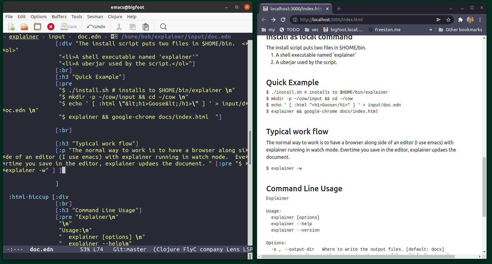

Explainer - a simple program for explaining things
Why would you use it?
To generate some quick documenation about how something works. There are other more complicated systems out there, asciidoctor looked cool, but also complicated.How does it work?
You create an input file (ie doc.edn), then execute the 'explainer' program. It walks through each block of the input file and produces output for each section.
For plantUML sections, the plantUML api is invoked and the diagram is generated. See https://plantuml.com/
for dot sections, the graphvis dot graph is generated and the image included. See Graphvis dot examples
For example, Using this as the 'doc.edn' file,
[
:js-file "myjavascript.js" ;; inserts the javascript into the document
:html "<h3>Authentication Example </h3>"
:html-hiccup [:div "Alice authenticates via Bob." [:br] [:br] ] ]
:plantuml-file "diagram.pu"
:html "<br><br>A dot example<br>"
:dot-file "figure.dot"
]The following output is generated;
Authentication Example

A dot example

Install as local command
- A shell executable named 'explainer'
- A uberjar used by the script.
Quick Example
$ ./install.sh # installs to $HOME/bin/explainer $ mkdir -p ~/cow/input && cd ~/cow $ echo ' [ :html "<h1>Goose</h1>" ] ' > input/doc.edn $ explainer && google-chrome docs/index.html
Watch Mode
When developing a document, using watch mode can be helpful. Typically means having browser (ie. chrome) along side of an editor (ie. emacs) with explainer running in watch mode. Everytime you save in the editor, explainer updates the document.
$ explainer -w
When running in watch mode, explainer checks for changes three times a second. When a timestamp on an input file changes, explainer regenerates the output.
The output page has a small bit of injected javascript which checks to see if the document version has changed. If the version has changed, the page is reloaded. The endpoint for checking the version is;
Command Line Usage
Explainer Usage: explainer [options] explainer --help explainer --version Options: -o, --output-dir Where to write the output files. [default: docs] -i , --input-dir Where to write the input files. [default: input] -w --watch Wait and watch for input file changes, and reflect them to the output file. -v --verbose Verbose output. -d --debug Debug output. -h --help Show this screen. --version Show version.
TODO
- add markdown - inline and file
- would be neat if the 'man page' documentation was obtained by running explainer. So have a script-provider?
- create video demoing explainer - kind of the ultimate fail for something which is supposed to explain things.
- consider aliases, for example
:bootstrap 3adds a boostrap thing from ~/.explainer-aliases and/or have built-in aliases. - docs for each provider?
Perhaps / Maybe / Ideas
- consider renaming the 'docs' directory to 'public_html' or 'www' or make the current dir the one with a *.edn file in it
- handle generating multipage docs, :page 'development.edn'
- Better error handling - indicate where the issue is (right now there is a blanket something went wrong)
- consider using jtidy to clean up output
- consider indenting the doc.edn doc
-bob